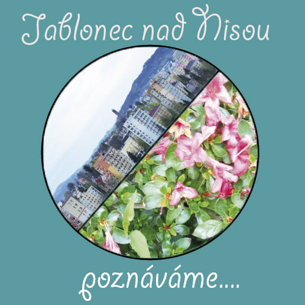
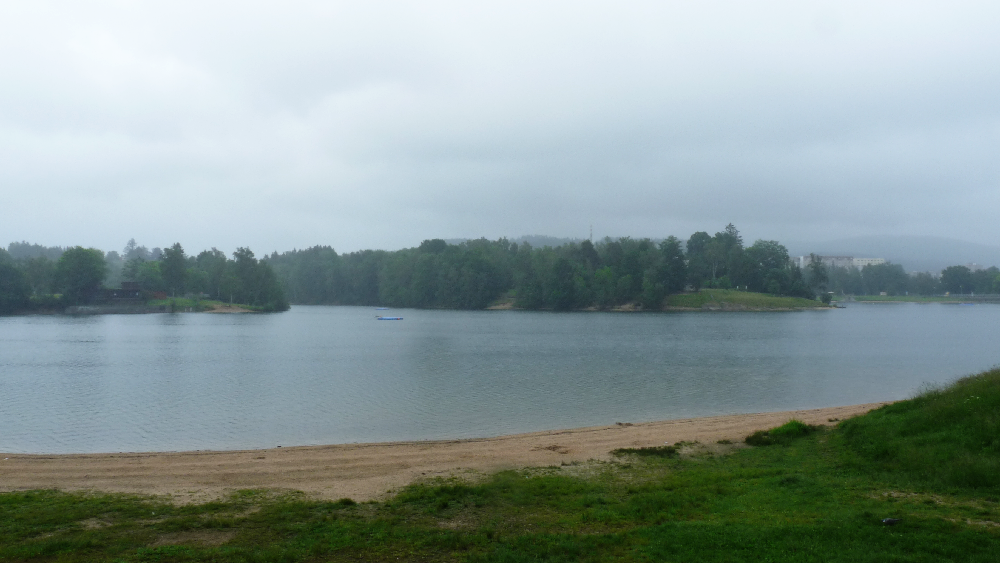
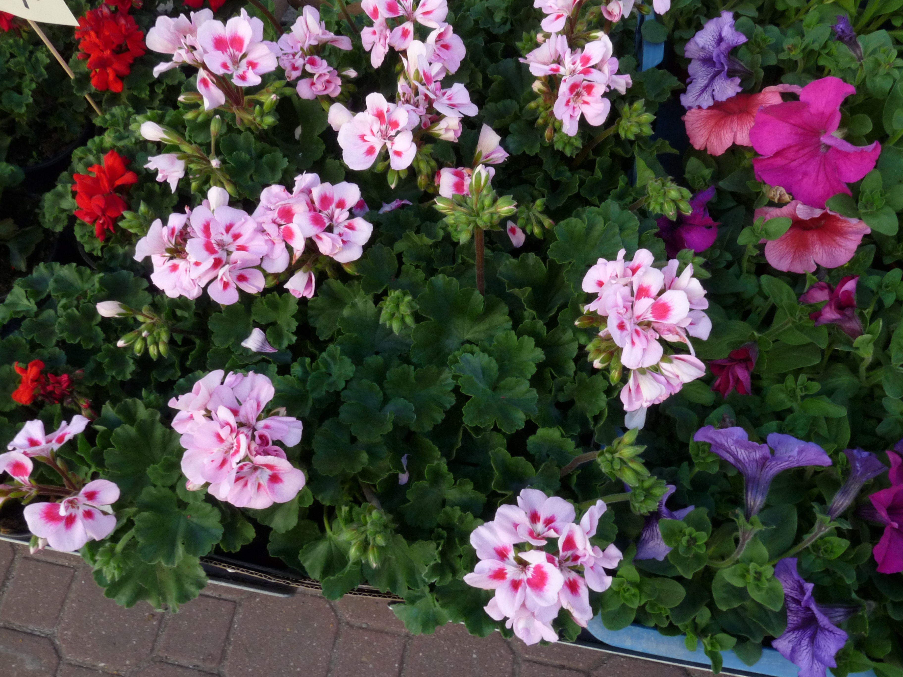
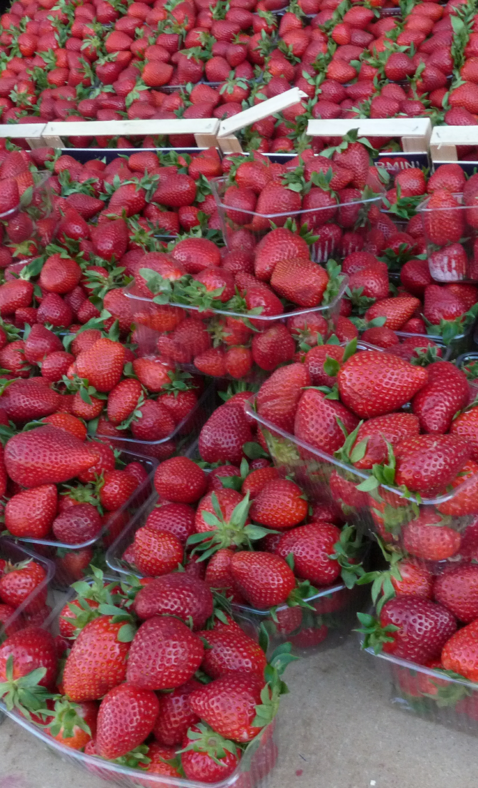
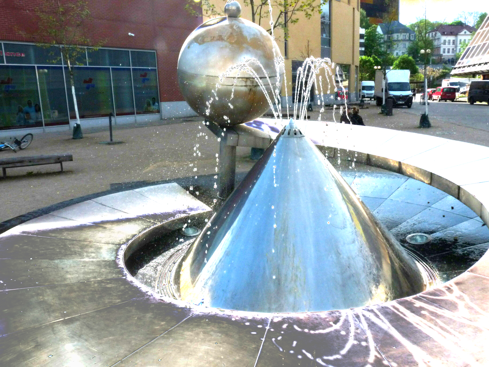
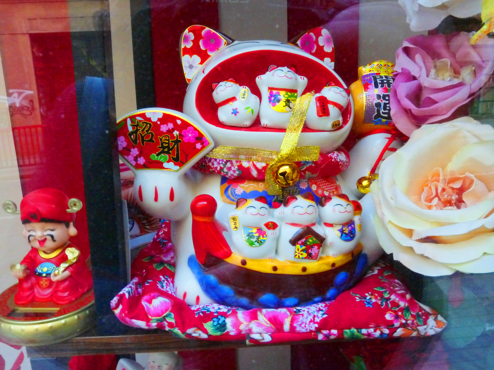

Webovky Fotky a region Liberec - Region Liberecký
web spravuje autor Petr Šimek



květiny, které nás těší ♥ ♥ ♥

Jahodové rodinné balení

Liberecký Region - část Liberce

kočička miláček - část Liberce

Basketball - sportovní hry
Basketball Nadřazené odvětví míčové hry, kolektivní sport Vrcholné soutěže Olympijský turnaj 1936 Mistrovství světa (muži) od roku 1950 Mistrovství světa (ženy) od roku 1953 Mistrovství Evropy (muži) od roku 1935 Mistrovství Evropy (ženy) od roku 1938 Mezinárodní federace Název FIBA FIBA Europe Založena 1932 Web www.fiba.com Národní svaz Název Česká basketbalová federace Web cz.basketball Basketbal, česky též košíková, zkráceně basket, je kolektivní míčový sport, ve kterém se dva týmy s pěti hráči snaží získat co nejvíce bodů vhazováním míče do obroučky basketbalového koše a zabránit protihráčům, aby body získali. K přiblížení se ke koši využívají vzájemných přihrávek nebo individuálního pohybu. Pohyb hráče s míčem probíhá pouze za pomoci driblinku jednou rukou o podlahu. Trefení koše při hře má hodnotu dvou bodů, z delší vzdálenosti (vyznačené čárou) tří bodů, tzv. trestný hod je za jeden bod. Hru vytvořil v roce 1891 Dr. James Naismith pro zpestření zimní sportovní přípravy svých studentů. I přes to, že se v původní podobě jednalo o nepříliš dynamický sport (pravidla neumožňovala pohyb s míčem), získal si brzy značnou popularitu a rychle se rozšířil nejen po Spojených státech. V roce 1932 byla založena Mezinárodní basketbalová federace (International Basketball Federation). V roce 1936 byl basketbal zařazen na pořad olympijských her a od roku 1976 se koná na OH i ženský basketbalový turnaj. převzato z: copy wikipedia
Pár vět o Mallorce
kdo tam ještě nebyl a chtěl by se tam podívat....
Mallorca ráj turistů
Španělské kulturní moře
Mallorca je jeden z největších Baleárských ostrovů, ale také největší ostrov Španělska. Leží v západní části Středozemního moře ve vzdálenosti přibližně 200 kilometrů od Valencie, Barcelony a Alžíru. Rozloha ostrova činí 3 648 km², je 110 km dlouhý a mezi 60 a 90 km široký. Jeho největším a zároveň i hlavním městem je Palma de Mallorca. Mallorca je častým cílem turistů a cestovní ruch je jedním z hlavních zdrojů příjmů tamního obyvatelstva. Každoročně navštíví Mallorcu 12 milionů turistů, hlavně Němců. Místní obyvatelé se živí kromě cestovního ruchu i zemědělstvím a pěstováním vína. Na ostrově žije necelý 1 milion obyvatel a úředním jazykem je španělština a katalánština. Dále na Mallorce mají svoje specifické nářečí tzv. Mallorqui, které vychází nejvíce z katalánštiny.Památky a zajímavosti
Hlavnímu městu Palmě dominuje katedrála La Seu (katedrála světla) která byla dostavěna v roce 1587. K vidění je i gotický hrad, který nechal postavit Jakub II.. Ten sloužil jako vězení až do 20. století. Byzantskou periodu připomínají základy baptisteria na půdorysu kříže s trojlistou nádrží na vodu. Po Arabech zde zůstaly arabské lázně z 10. století. Hlavní zástavba pochází z období panování aragonských králů a španělských Habsburků. Roku 1399 byl založen kartuziánský klášter Valldemosa, jehož stavby spolu s lékárnou byly obnoveny v klasicistním slohu. Pobýval tam v letech 1838 – 1839 (v posledních letech svého života) polský skladatel Frederik Chopin se spisovatelkou Sandovou. Z technických památek se v provozu zachovala dráha starého vlaku, která vede z Palmy do městečka Sóller a zpět. Pro turistiku Mallorcu objevil velkovévoda toskánský Ludvík Salvátor, který si v Palmě zbudoval jedno ze sídel. Kromě Palmy je na Mallorce několik oblíbených městeček. Např. Deia – městečko se strmými uličkami, které si oblíbili především umělci, Andratx plný starých kostelů nebo Alcudia s římskými hradbam.video je použito z internetu a je ilustrační
Turecko - Antalya
kdo tam ještě nebyl a chtěl by se tam podívat....
Turecko ráj turistů
Turecko (turecky Türkiye), plným názvem Turecká republika (turecky Türkiye Cumhuriyeti), je transkontinentální stát ležící převážně v Anatolii v západní Asii, s menší částí zvanou Východní Thrákie v jihovýchodní Evropě. Na severu sousedí s Černým mořem, na východě s Gruzií, Arménií, Ázerbájdžánem a Íránem, na jihu s Irákem, Sýrií a Středozemním mořem (a Kyprem) a na západě s Egejským mořem, Řeckem a Bulharskem. Na ploše asi 784 000 km² žije 86 milionů lidí. Ankara je hlavním a druhým největším městem Turecka; Istanbul je jeho největším městem, hospodářským a finančním centrem. Mezi další velká města patří İzmir, Bursa, Antalya, Konya a Adana. Většinu obyvatel tvoří Turci, největší etnickou menšinou jsou Kurdové, úředním jazykem je turečtina. Turecko je oficiálně sekulární stát, ale většinu obyvatelstva tvoří muslimové. Lidské osídlení začalo na území Turecka nejpozději v pozdním paleolitu, nacházejí se zde významná neolitická naleziště jako Göbekli Tepe a některé z raných zemědělských oblastí. Žila zde řada starověkých národů. Chattijci byli asimilováni příchozími anatolskými národy. Rostoucí rozmanitost v klasické Anatolii přešla po dobytí Alexandrem Velikým v kulturní helenizaci; helenizace pokračovala i v římské a byzantské éře.V 11. století se do Anatolie začali stěhovat seldžučtí Turci, čímž byl zahájen proces turkizace. Seldžucký Rúmský sultanát vládl Anatolii až do mongolské invaze v roce 1243, kdy se rozpadl na drobná turecká knížectví. Od roku 1299 Osmané knížectví sjednotili a expandovali; sultán Mehmed II. dobyl Konstantinopol v roce 1453. Za vlády Selima I. a Sulejmana Nádherného se Osmanská říše stala světovou velmocí. Od konce 18. století moc a území říše upadaly; byly také provedeny reformy. V 19. a na počátku 20. století vedlo pronásledování muslimů během osmanského úpadku a v Ruské říši k rozsáhlým ztrátám na životech a masové migraci do dnešního Turecka z Balkánu, Kavkazu a Krymu. Druhá ústavní éra skončila státním převratem v roce 1913. Pod vládou Tří pašů vstoupila Osmanská říše v roce 1914 do první světové války. Během války se osmanská vláda dopustila genocidy na domácích arménských, řeckých a asyrských občanech. Po porážce byla Osmanská říše rozdělena.Turecká válka za nezávislost vyústila ve zrušení sultanátu v roce 1922 a podepsání Lausannské smlouvy v roce 1923. Republika byla vyhlášena 29. října 1923 po vzoru reforem, které inicioval první prezident země Mustafa Kemal Atatürk. Turecko je unitární prezidentskou republikou, hlavou státu je prezident, zákonodárnou moc má jednokomorové národní shromáždění. Jedná se o zemi s vyššími středními příjmy a rozvíjející se ekonomikou; jeho ekonomika je 17. nebo 11. největší na světě. Turecko je zakládajícím členem OECD, G20 a Organizace turkických států. Díky své geopoliticky významné poloze je Turecko regionální mocností a raným členem NATO. Turecko je kandidátem na členství v Evropské unii, je součástí celní unie EU, Rady Evropy, Organizace islámské spolupráce a Mezinárodní organizace turkické kultury. V Turecku se rozkládají pobřežní nížiny, vysoká centrální náhorní plošina a různá horská pásma; podnebí je mírné s drsnějšími podmínkami ve vnitrozemí. V Turecku se nacházejí tři ohniska biologické rozmanitosti, je náchylné k častým zemětřesením a je velmi zranitelné vůči změně klimatu. Turecko má všeobecnou zdravotní péči, rostoucí dostupnost vzdělání a rostoucí inovativnost; dále 21 památek světového dědictví UNESCO, 30 zápisů na seznamu kulturního dědictví UNESCO a bohatou a rozmanitou kuchyni. Turecko je předním vývozcem televizního obsahu a je čtvrtou nejnavštěvovanější zemí na světě.


Předchozí Odpovědi